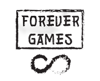

Este juego es una versión del clásico Pengo donde el jugador empuja bloques de hielo para derrotar enemigos. Se ha desarrollado con C++ y la librerÃa Raylib como parte del Proyecto 1.
VÃctor López y Mario Torrents RodrÃguez
VÃctor: lógica del jugador, fÃsicas, menús.
Mario: enemigos, diseño de niveles, puntuación.
(El video será añadido aquà cuando esté listo)